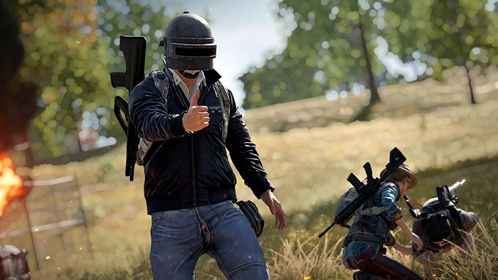

Red Dead Redemption 2
description
رد دد ریدمپشن ۲ جدیدترین عنوان این لیست است. این بازی با داستان بسیار زیبا و دنیای گسترده و پرمحتوا نشان داد که عناوین تک نفره همچنان طرفداران خود را دارد. از طرفی بخش آنلاین رد دد نیز طرفداران زیادی داشته و راکستار بار دیگر توانست قدرت خود را نشان دهد. یکی از شاخصههای مهم رد دد ۲ کاراکترهای بازی بود که راکستار توانست به بهترین نحو آنها را طراحی کند. از طرفی این طراحی کاراکتر با داستان بازی نیز هماهنگی بسیار خوبی داشته و به همین دلیل همه این موارد باعث شدند رد دد ۲ یکی از پرفروشترین عناوین تاریخ باشد
فروش : 48 میلیون نسخه
Pokemon Gen 1
description
پوکمون نسل ۱ در اصل شروع سری عناوین پوکمون بود. در ابتدا این بازیها با نامهای قرمز و سبز در ژاپن منتشر شدند. پس از آن نسخه قرمز و آبی برای کشورهای دیگر هم عرضه شدند. نسخه زرد این بازیها از سال ۱۹۹۸ تا ۲۰۰ عرضه شد. نینتندو آمار رسمی فروش این بازیها را منتشر نکرده است. با این حال با بررسیهای بسیار میتوان یک مقدار کلی از میزان فروش این عناوین بدست آورد. یکی از نکات جالب اینجاست که به طور کلی عناوین پوکمون تا سال ۲۰۲۲ نزدیک به ۴۴۰ میلیون نسخه فروش داشته است.
فروش:47 میلیون نسخه
Super Mario Bros
.jpeg)
description
کمتر کسی وجود دارد که با نام سوپر ماریو آشنایی نداشته باشد. این مجموعه در ابتدا در سال ۱۹۸۵ وارد دنیای بازیهای ویدئویی داشته و همچنان هم ما شاهد عناوین مختلف از این مجموعه هستیم. اولین بازی سوپر ماریو بروز نزدیک به ۴۰ میلیون نسخه روی کنسول NES فروش داشت. موارد دیگر نیز توانستند موفقیت خوبی کسب کنند اما این سوپر ماریو بروز اول بود که راه یکی از بهترین مجموعههای بازیهای ویدئویی را آغاز کرد.
فروش:48 میلیون نسخه
Overwatch
description
برخلاف شماره ۲، بازی اورواچ ۱ یک عنوان رایگان نبود. به همین دلیل برای تجربه این بازی شما باید هزینه کامل را پرداخت کرده و محتوای بعدی به صورت رایگان برای شما عرضه میشد. این سیستم اقتصادی توانست موفقیت بسیار خوبی برای بلیزارد کسب کند. به حدی که این بازی پرفروشترین عنوان شوتر بوده و عملکرد بسیار خوبی داشت. از طرفی اورواچ ۱ سبک اول شخص شوتر را به طور کامل زنده کرد. به این معنا که در برهه زمانی که بازیکنان به طور کامل از این سبک خسته شده بودند، بلیزارد با عرضه اورواچ یک تغییر بزرگ در سبک شوتر ایجاد کرد.
فروش:50 میلیون نسخه
Mario Kart 8 + Deluxe
description
نسخه نینتندو سوییچ بازی ماریو کارت ۸ نزدیک به ۴۸ میلیون نسخه فروش داشته است. نینتندو اعلام کرد که این بازی پرفروشترین عنوان سوییچ است. از طرفی این بازی برای کنسول وی یو (Wii U) هم عرضه شد که باعث شد روی هم نزدیک به ۵۷ میلیون نسخه فروش داشته باشد. به طور کلی این بازی طرفداران بسیار زیادی داشته و یکی از بهترین عناوین ریسینگ تاریخ است.
فروش:57 میلیون نسخه
PUBG
بازی پابجی یکی از عناوین بسیار مهم در دنیای گیمینگ است. از این رو که تأثیر بسیار زیادی روی محبوبیت سبک بتل رویال داشت. به نوعی این بازی معرفی این سبک بوده و توانست موفقیت بسیار زیادی کسب کند. یکی از نکات جالب میزان دانلود این بازی در موبایل است. به حدی که پابجی موبایل بیش از یک میلیارد بار در پلتفرم موبایل دانلود شده که به نوبه خود یک رکورد حساب میشود.
فروش:75میلیون نسخه
Wii Sport
کنسول وی یکی از دستگاههای بسیار خاص بود. این کنسول در زمانی عرضه شد که نوآوری در این دستگاهها به اوج خود رسیده و شرکتهای مختلف در تلاش بودند تا ورزش را به خانه بیاورند. وی توانست موفقتر از رقبا مثل کینکت (Kinect) یا پلیاستیشن موو (Move) عمل کند. یکی از عوامل اصلی این موفقیت هم همین بازی وی اسپورت است. این بازی توانست با فروش بسیار زیادی که داشت نشان دهد که ورزش در خانه هم طرفداران زیادی دارد. از طرفی وی اسپورت پرفروشترین بازی ساخته شده توسط نینتندو است.
فروش:83 میلیون نسحه
Grand Theft Auto 5
بازی جیتیای ۵ پرفروشترین عنوانی است که تنها برای کنسول و کامپیوتر عرضه شده است. به این معنا که دو مورد بعدی نسخه موبایل هم دارند. این عنوان شرکت راکستار را میتوان یکی از شجاعانهترین بازیهای این شرکت دانست. جیتیای ۵ مرزهای جهان باز بودن یک عنوان را جابجا کرده و فروش بسیار زیادی داشت. از طرفی راکستار نیز به بهترین نحو از بخش آنلاین این بازی پشتیبانی کرده و به همین دلیل فروش جیتیای ۵ نزدیک به ۱۰ سال ادامه داشته است. از طرفی این بازی سریعترین محتوای سرگرمی است که به درآمد یک میلیارد دلار رسیده و طرفداران بسیار زیادی در سراسر دنیا دارد.
فروش:170میلیون نسخه
Minecraft
ماینکرفت یکی از عناوین به شدت موفق در دنیای گیمینگ است. این بازی برای نزدیک به ۲۲ پلتفرم مختلف عرضه شده و از طرفی محتوای جانبی بسیار زیادی برای آن وجود دارد. ماینکرفت به نوعی پایه گذار سبک سند باکس (Sand Box) بوده و آزادی عمل بسیار زیادی به کاربران میداد. این آزادی عمل به حدی بود که کاربران میتوانستند ماجراجویی خود را در این بازی ساخته و یک تجربه خاص را داشته باشند. شرکت Mojang پس از ساخت این بازی موفقیت بسیار زیادی کسب کرد. این موفقیت باعث شد که توجه مایکروسافت جلب شده و این شرکت را خریداری کند. به همین دلیل در حال حاضر Mojang یکی از استودیوهای مایکروسافت است.
فروش:238میلیون نسخه
Tetris
تتریس را میتوان عنوانی نام برد که انتهای عمر ندارد. حتی پس از گذشت نزدیک به ۴۰ سال از عرضه این بازی، هیچ بازیای نتوانست به این میزان فروش برسد. تتریس روی پلتفرمهای مختلفی عرضه شده و در ابتدا شرکت معینی نداشت. پس از موفقیت بسیار زیادی این بازی شرکت Tetris Company تأسیس شده و اطلاعات فروش این بازی را عرضه کرد. تتریس در ابتدا برای کامپیوتر ساخته شده توسط شوروی به اسم Elektronika 60 عرضه شد. پس از آن برای نزدیک به ۵۰ پلتفرم مختلف عرضه شده و همچنان فروش این بازی ادامه دارد. آخرین عنوان ساخته شده از تتریس بازی Tetris Effect: Connected بوده که برای کنسولهای نسل جدید عرضه شد.
فروش:238میلیون نسخه